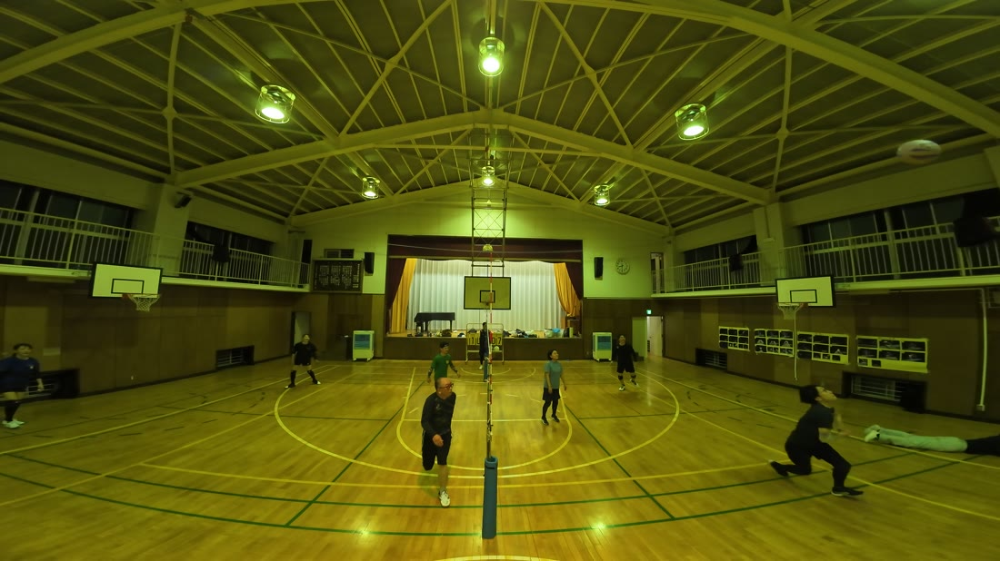
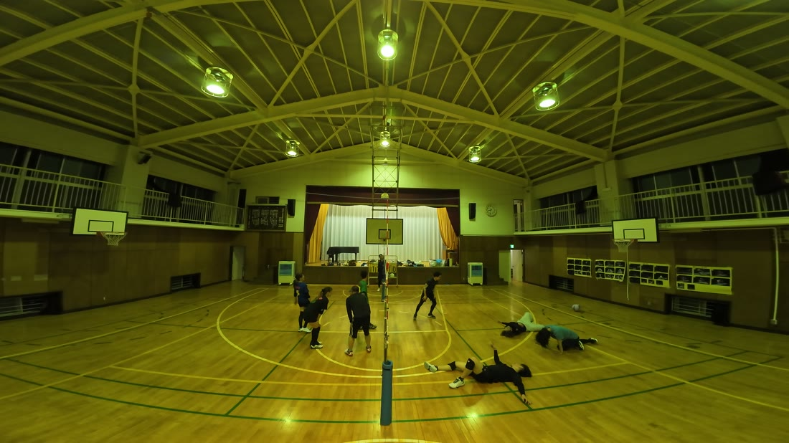
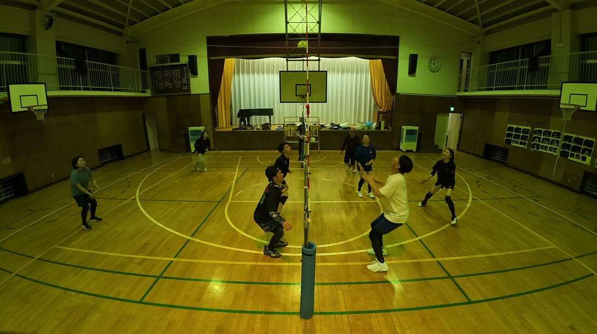
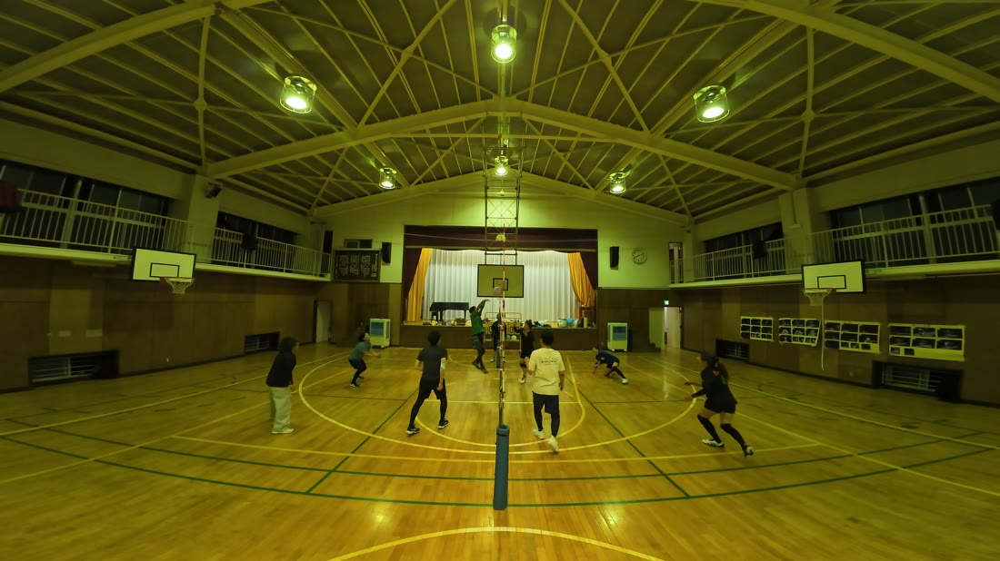
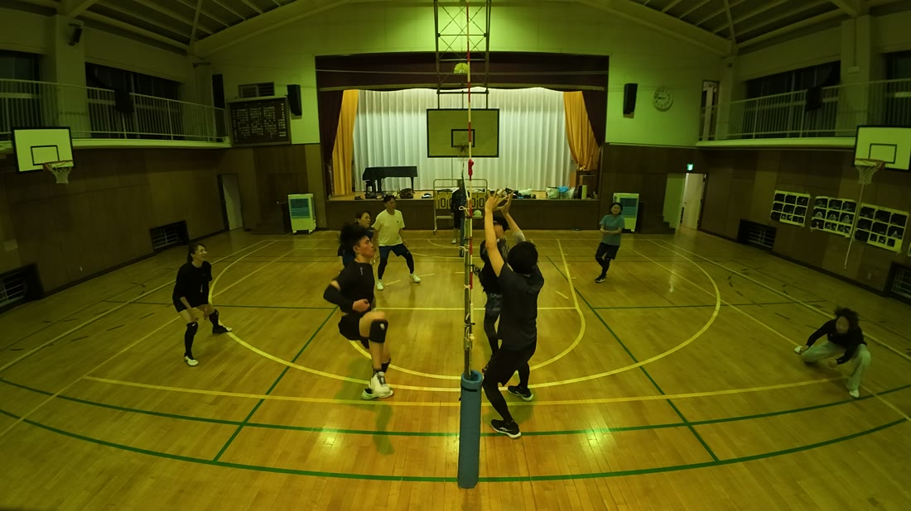
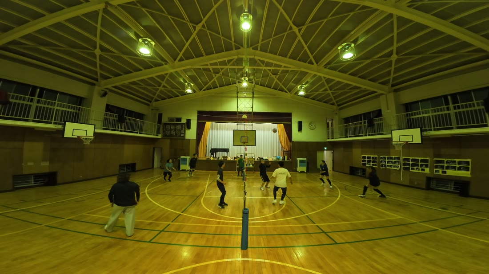
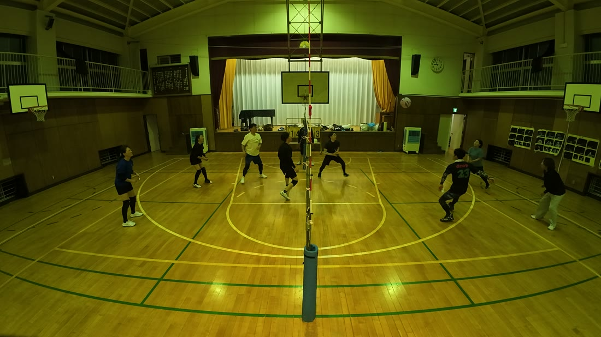
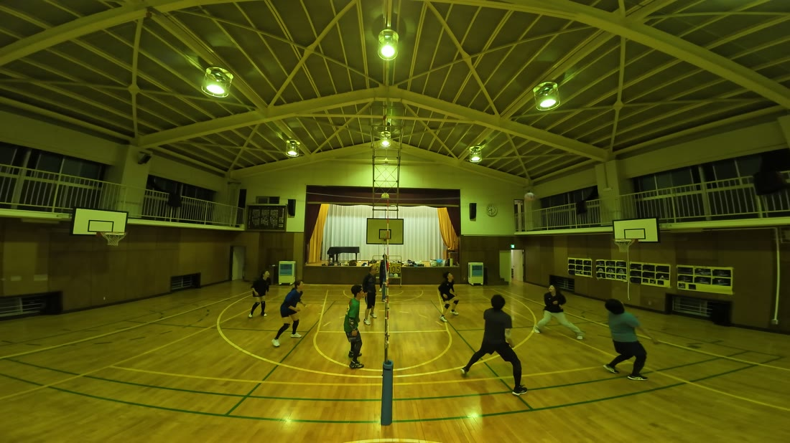

9月19日の都筑の大会に向けた練習でした。写真をタップすると、その場面から動画が再生されます。
ダイジェスト


動画②の21:04。相手のすばらしいサーブに、ダイビングレシーブ。そのまま味方の得点につながりました。

動画② 21:04この日、ゆいは4回、体を投げ出しています。
届いた1本も、届かなかった3本も、全部同じ姿勢でした。
そして ゆい は、拾うだけの人ではありません。①03:17では、やや乱れた球を正確なトスに変えて、るきのアタックにつなげています。③03:58では、深くしゃがんだ安定したレシーブ。
拾って、つないで、また拾う。この日のコートに、いちばん長く体を投げ出していた人です。
動画②の22:19から、33秒。この日いちばん長いラリーでした。
最後、ゆいが飛び込みました。ギリギリ届きませんでした。

動画② 22:19〜（33秒）そのあと、コートにいた全員が、うつぶせになりました。
点は取られています。それでも、全員が同じ気持ちで床に伏せた。
この日いちばんの場面は、点が入った場面ではありませんでした。
2回、正確なトスから得点が生まれています。③09:45のバックトスは るきの強烈なアタックへ。③24:39のトスは けんが空いたスペースへ。

動画③ 24:39そして守りでも。動画②の01:34、うっちーのアタックに素早く反応してカットしました。

動画② 01:34結果は失点で終わりましたが、反応の速さが際立ちました。
2本とも、強烈なアタックで決めています。①03:18 は ゆいのトスから、③09:46 は かずえのバックトスから。

動画③ 09:45〜46上げる人がいて、決める人がいる。この2本は、そのお手本のような形でした。
動画①の01:35。相手の攻撃を正確なレシーブで受け、セッターへ返し、けんのアタックにつなげました。

動画① 01:35守って終わりではなく、そこから攻撃を作りました。失点を防ぎ、得点を生んだ——この日いちばん価値の高い1本です。
動画③の17:44。けんのアタックを、正確にカットしました。

動画③ 17:44そして①12:48では、ゆりこのカットを受けてフェイントで決めています。守っても、攻めても。
動画②の18:48。後ろ向きで、ワンハンドレシーブ。点にはつながりませんでしたが、手を出しました。

動画② 18:48①12:48では、けんのアタックを正確にカットして、やっさんのフェイントにつなげています。ゆきよと同じ形の1本。この日、この形が2回出ました。
10秒を超えると長いラリー、20秒を超えると勝敗に関係なくよいラリー。この日は20秒超が2本、10秒超が5本ありました。
練習の途中で、撮影用の三脚が壊れました。ボールが当たって倒れそうになり、支えようとしたところでポールが折れたとのこと。動画②の09:00に、その瞬間が映っています。カメラが揺れて、天井を向きます。
すぐ低くして撮り直し、そのあと別の三脚に組み替えて続けています。録画は一度も止まっていません。
9月19日の都筑の大会まで、あと3週間。次回を楽しみにしています。
けんぴー(AI)